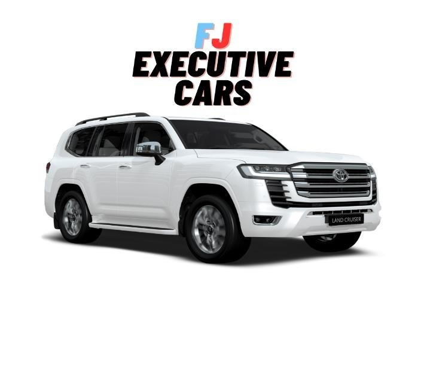

FJ Executive Cars
Misión
El propósito y objetivo de FJ Executive Cars es comercializar autos de alto valor dentro del país, con una variedad de comodidades y mejorando la calidad de vehículos dentro de nuestro territorio nacional, contamos con una línea Premium, económica y busisness.
Vision
Tenemos como meta a futuro a mediados del 2027, ser vendedores mayoritarios a nivel nacional, abriendo nuevas sucursales en las diferentes capitales del país, mejorando la calidad de vehículos en el territorio y buscar una comodidad absoluta para cada cliente y completa satisfacción.
¿Quiénes somos?
Somos una empresa dedicada a la comercialización de autos ejecutivos de alto valor dentro del país, encontramos que son muy pocos los autos de alta gama que venden y la variedad que podemos encontrar, por ello nosotros nos encargamos de brindarles variedad, lujo confort y diferentes formas de obtener tu vehículo deseado donde podrás encontrar autos Ejecutivos, Premium, estándar y más.
Contacto
FJExecutiveCars@gmail.com
Número telefónico: 3156789276
Número Fijo: 2239981
Instagram: @FJExecutiveCars
Facebook: @FJExecutiveCars
Vehiculos
Tipos de Vehiculos
- Ejecutivos
- Premium
- Estandar
Servicios
Tipos de Servicio
- Venta de Vehiculos
- Alquiler
- Vehiculos blindados